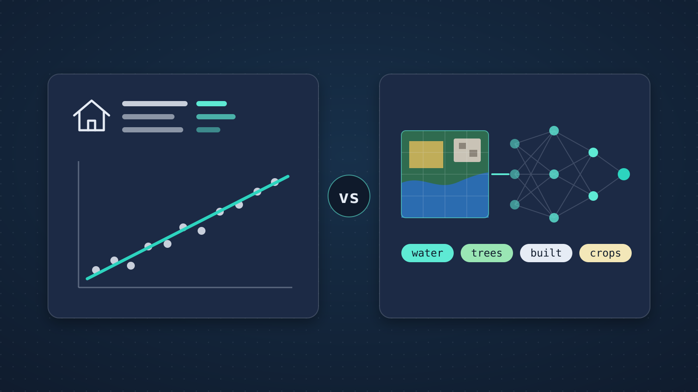

House price prediction
- Algorithm
- Linear (multiple) regression
- Real-world use
- County property tax assessment, Douglas County, Colorado
- Input
- A table of home features
- Why it fits
- Known features, modest data, values must be explained
Artifacts / Artifact 3
An analysis of two real-world systems, one built on traditional machine learning and one on deep learning, explaining why each approach fits its problem and why the other one does not.
Individual work. AIML-500: Machine Learning Fundamentals.

Machine learning and deep learning both let computers learn from data, but they work in different ways. Deep learning is a subset of machine learning. Machine learning is AI that learns patterns from data, using algorithms such as linear regression, decision trees, and support vector machines. Deep learning, on the other hand, uses neural networks with many layers that learn features from raw data on their own, such as Convolutional Neural Networks (CNNs) for images and Transformers for language (Indiana Wesleyan University [IWU], n.d.).
A real-world use of house price prediction is property tax assessment. It would be difficult for county assessors to visit every home in their area each cycle to value it. Douglas County, Colorado, uses multiple regression analysis to value single-family homes. The county divides its market into eight economic areas and uses property characteristics such as neighborhood, lot size, building square footage, construction quality, age, garages, and basements to estimate the value of every home (Douglas County Assessor, n.d.). Multiple regression is linear regression with several input features, so this matches the lesson's linear regression example.
I think multiple regression fits this problem for four reasons. First, the data is structured. Each home is one row in a table, and the important features are already known. Appraisers already know that features like size, location, age, and quality drive price, so there is no need for the model to discover them. Second, the amount of data is modest. A county has a limited number of sales in each area, and simple models work well with smaller datasets (IWU, n.d.). Third, assessment values must be explained. The International Association of Assessing Officers (IAAO, 2023) states that regression models should document their final equations and be reproducible, and the assessor should be able to explain to the property owner how a value was reached. Fourth, the results should be consistent and fair. Douglas County notes that two homes with the same description and location will always receive the same value (Douglas County Assessor, n.d.).
The county's sales data is too small for deep learning. Deep neural networks need very large amounts of data, so a deep model would likely overfit by memorizing past sales and performing poorly on new homes. Deep learning's main strength, learning features from raw data, also offers little benefit, because the important features are already known and stored in tables. Most importantly, a deep network has thousands of internal weights, and no single weight explains a home's value. If a homeowner appeals, the assessor could not show which features led to the number, which conflicts with the IAAO's expectation that values be documented and explained. Finally, the extra computing cost would not be justified, since any small gain in accuracy would not outweigh the loss of transparency.
The lesson describes CNNs that recognize faces from raw pixels. The same technique is used to recognize land cover in satellite images, which connects closely to my work on satellite imagery. A strong example is Dynamic World, created by Google and the World Resources Institute. It uses deep learning on Sentinel-2 satellite imagery to map land cover at 10-meter resolution around the world in near real time, labeling each pixel as a class such as water, trees, crops, or built area (Brown et al., 2022). It runs on Google Earth Engine and the cloud, so a new map can be produced as each new satellite image arrives.
I think deep learning is the right choice here because the input is raw, unstructured data. Each image contains millions of pixels across many spectral bands. A CNN learns useful features by itself, starting with edges and textures in early layers and building up to shapes like field boundaries, rivers, and city blocks in deeper layers (IWU, n.d.). The patterns are also spatial. A pixel's land cover often depends on its neighboring pixels. A gray pixel could be a road, a roof, or rock, and the surrounding pattern tells the difference. Convolutional layers are designed to capture this context. Finally, Sentinel-2 images the whole planet every few days, which means there is a large volume of data to process. Once trained, the model can process new images automatically and keep the map current.
This task is too large and complex for traditional machine learning. To use a decision tree, people would have to design features by hand for every pixel, such as band ratios, texture measures, and neighborhood statistics. These hand-made features are hard to design so that they work across every continent, season, and terrain, and they often miss the spatial patterns a CNN learns automatically. Because the goal is to produce global maps from each new image in near real time, the need to learn spatial features from raw pixels at a massive scale makes deep learning the better fit.
| Factor | Property assessment (ML) | Land cover mapping (DL) |
|---|---|---|
| Data type | Structured table of home features | Raw satellite image pixels |
| Feature selection | Chosen by appraisers | Learned by the network |
| Data volume | Thousands of sales | Petabytes of global imagery |
| Explainability | Required for appeals; equations documented | Less critical; accuracy validated against expert labels |
| Computing needs | Low; runs on standard systems | High; runs on cloud infrastructure |
The two examples above show that the better approach depends on the problem: what kind of data is available, how much of it exists, and whether the results must be explained. Property assessment uses structured data with limited sales, and decisions that must be explained to taxpayers, so simple machine learning is the right tool. Land cover mapping uses huge amounts of raw imagery with spatial patterns that are hard to describe by hand, so deep learning is the right choice.
A written case-study analysis that compares traditional machine learning and deep learning. It examines one example of each from the course lesson, house price prediction with linear regression and image recognition with a CNN, through a documented real-world system: Douglas County's property assessment and Google's Dynamic World land cover map. For each, it explains why the chosen approach fits and why the other approach does not.
To learn how to tell machine learning and deep learning apart in practice, not just in definitions, by analyzing real systems and the reasons behind their design choices.
I selected two examples from the lesson: house price prediction for machine learning and image recognition for deep learning. I then researched a real-world system for each. For the machine learning example, I used Douglas County's published mass appraisal method and the IAAO standard that governs it. For the deep learning example, I chose Dynamic World because it connects to my own work with satellite imagery.
For each case, I compared the two approaches using the same questions: what kind of data is available, how much of it exists, whether features must be designed by hand, and whether results must be explained. I summarized the comparison in a table and revised the analysis for clarity before adding it to this portfolio.
This analysis gives IT managers a simple way to choose between machine learning and deep learning: match the method to the data, the scale, and the need for explanation, instead of defaulting to the newest technique.
It uses two real, documented systems instead of hypothetical examples, and it shows that the "simpler" method can be the better business decision. The deep learning case also draws on my own experience with satellite imagery platforms.
The same decision comes up in IT operations. Routing help-desk tickets based on structured fields, where every decision may need to be audited, often suits a simple, explainable model. Detecting unusual patterns across millions of raw log lines or monitoring images may need deep learning. Knowing the difference helps teams avoid overspending on complex models or choosing tools they cannot explain.
Brown, C. F., Brumby, S. P., Guzder-Williams, B., Birch, T., Hyde, S. B., Mazzariello, J., Czerwinski, W., Pasquarella, V. J., Haertel, R., Ilyushchenko, S., Schwehr, K., Weisse, M., Stolle, F., Hanson, C., Guinan, O., Moore, R., & Tait, A. M. (2022). Dynamic World, near real-time global 10 m land use land cover mapping. Scientific Data, 9, Article 251. https://doi.org/10.1038/s41597-022-01307-4
Douglas County Assessor. (n.d.). Mass appraisal. Douglas County, Colorado. https://www.douglasco.gov/assessor/mass-appraisal/
Indiana Wesleyan University. (n.d.). Machine learning vs. deep learning [Lesson]. AIML-500: Machine Learning Fundamentals. Brightspace.
International Association of Assessing Officers. (2023). Standard on mass appraisal of real property. https://iaao.org/wp-content/uploads/2023_Oct_20_StandardOnMassAppraisal_Updated-clean.pdf